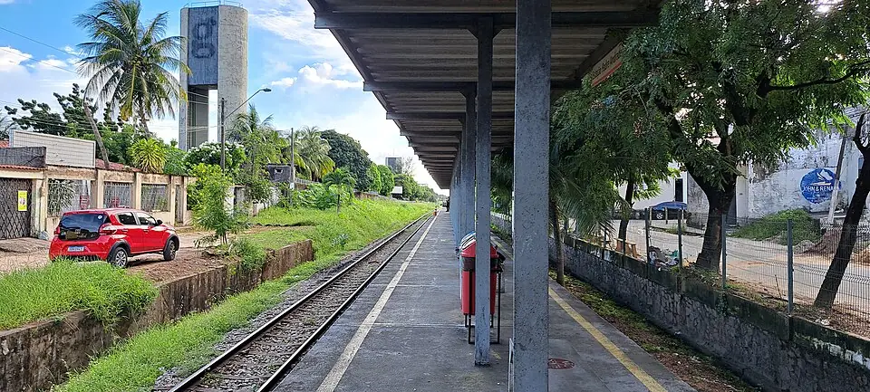

Linha Oeste
Sentido Caucaia
| Primeiro | Último | |
|---|---|---|
| Segunda a sexta | 05:41 | 20:11 |
| Sábado | 05:41 | 20:11 |
| Domingo | sem operação (só em dias especiais) | |
Nos dias úteis, passa a cada ~45 min no pico, ~105 min no resto do dia.
Carregando os horários de hoje…

Fotos do Wikimedia Commons (reduzidas para o site), de quem fotografou e liberou o uso. Toque no nome para ver a original.
Linha Oeste
| Primeiro | Último | |
|---|---|---|
| Segunda a sexta | 05:41 | 20:11 |
| Sábado | 05:41 | 20:11 |
| Domingo | sem operação (só em dias especiais) | |
Nos dias úteis, passa a cada ~45 min no pico, ~105 min no resto do dia.
Linha Oeste
| Primeiro | Último | |
|---|---|---|
| Segunda a sexta | 06:01 | 20:31 |
| Sábado | 06:01 | 20:31 |
| Domingo | sem operação (só em dias especiais) | |
Nos dias úteis, passa a cada ~45 min no pico, ~90 min no resto do dia.
Em feriado, eleição, ENEM e eventos o Metrofor costuma mudar o horário: as próximas partidas acima já mostram o aviso quando há operação especial anunciada.
Linha Oeste › · 3ª de 10 estações
🛗não temElevador
↗1Rampa
⇅não temEscada rolante
🪜não temEscada
Dados do Metrofor. Um elevador pode estar parado para manutenção.
Todos os metrôs e VLTs têm espaço para cadeira de rodas. Encontrou algo diferente? Conte pelo WhatsApp.
3 lugares a até 1 km a pé, pelas ruas.